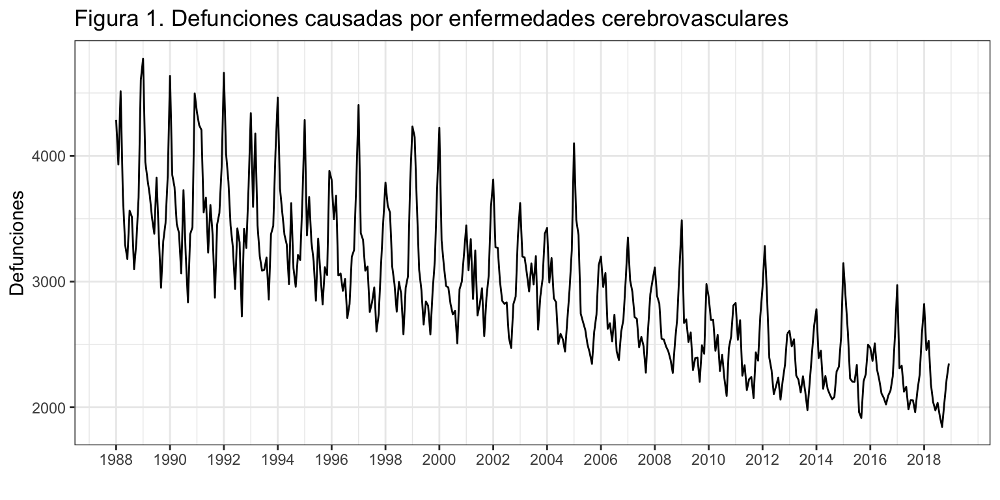
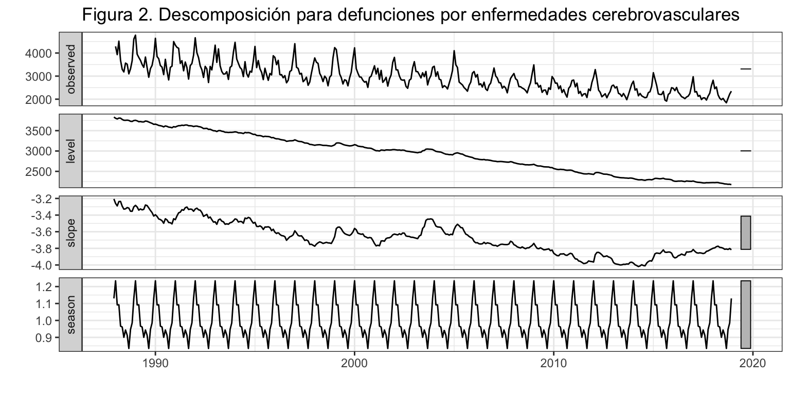
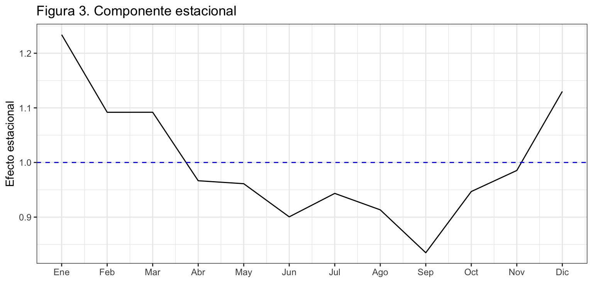
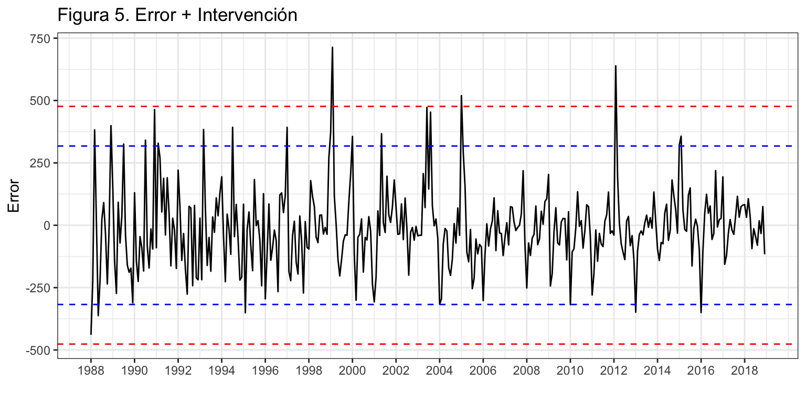
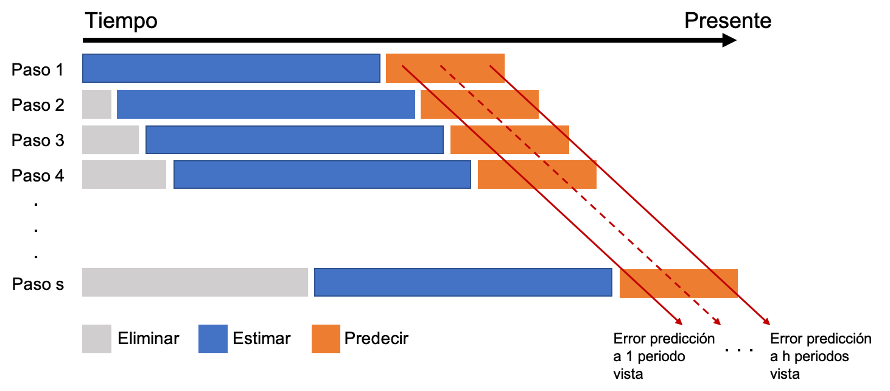
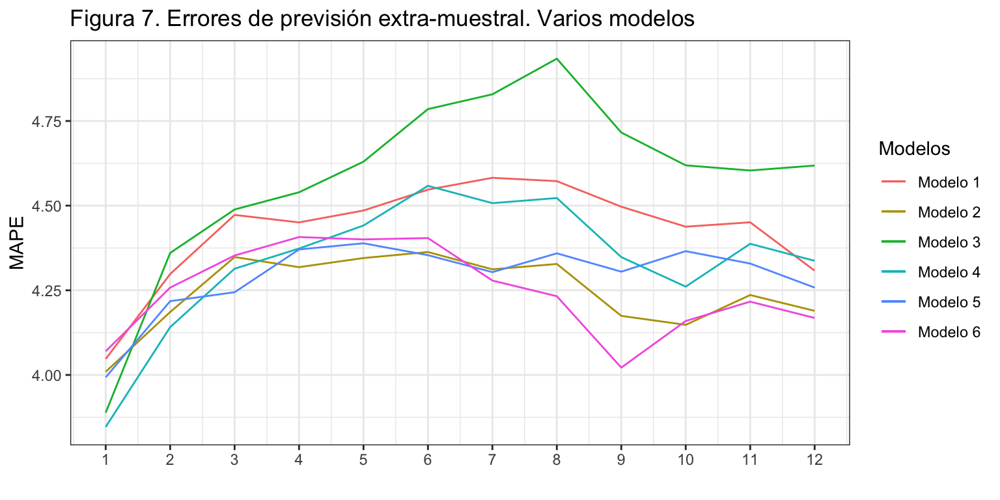
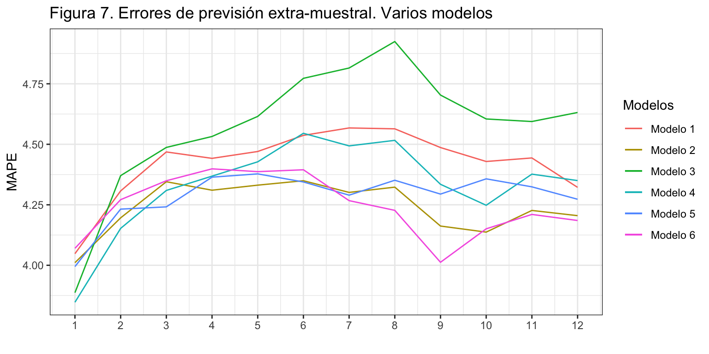

Introducción
Consideremos de nuevo la serie temporal correspondiente al número de defunciones causadas por enfermedades cerebrovasculares, Esta serie está disponible en el Instituto Nacional de Estadística desde enero de 1980 hasta diciembre de 2018, un total de 39 años o 468 meses.
En la descriptiva vimos que la descomposición revelaba la presencia de varios valores atípicos concentrados al inicio de la serie. Por este motivo, para el análisis por técnicas de alisado exponencial vamos a recortar la serie y considerarla solo desde enero de 1988, 31 años o 372 meses.
La serie presenta tendencia decreciente y estacionalidad de orden 12 en un claro esquema multiplicativo. Ya vimos que los determinantes del efecto estacional son la temperatura y el número de días del mes.

Ajuste por alisado exponencial e interpretación
Vamos a aplicar la metodología de alisado exponencial a la serie de defunciones. Si se estima el modelo sin imponer ninguna restricción ets identifica como modelo óptimo ETS(M,A,M).
ETS(M,A,M)
Call:
ets(y = DefEnfCer, model = "ZZZ")
Smoothing parameters:
alpha = 0.0725
beta = 0.0002
gamma = 0.0001
Initial states:
l = 3833.5826
b = -3.2059
s = 1.1301 0.9854 0.9468 0.8348 0.9133 0.9434
0.9005 0.9612 0.9666 1.092 1.0919 1.2339
sigma: 0.0516
AIC AICc BIC
5941.880 5943.609 6008.502
Training set error measures:
ME RMSE MAE MPE MAPE MASE ACF1
Training set -10.73983 158.9693 114.7663 -0.562124 3.75366 0.6687258 0.2345205
El modelo estimado tiene pendiente aditiva, estacionalidad multiplicativa y residuo multiplicativo: \[y_{t+1} = (l_t + b_t) \cdot s_{t+1-m} \cdot (1 + \varepsilon_{t+1}).\]
El valor de \(\alpha\) indica que el nivel de la serie ha ido variando muy lentamente en el tiempo. Los valores de \(\beta\) y \(\gamma\) son prácticamente cero e indican que ambos, la pendiente y la estacionalidad en las enfermedades cerebrovasculares, se mantienen constantes en el tiempo. (Véase figura 2.)

La calidad del ajuste es bastante buena, con un MAPE de 3.8% y un RMSE de 159 casos (o 115 si usamos el MAE). Además, según el MASE, el modelo de alisado exponencial supone una mejora del 33% respecto del método ingenuo con estacionalidad, el más sencillo que podríamos aplicar.
Los últimos valores estimados del nivel y la estacionalidad, que corresponden a diciembre de 2018, nos permiten mostrar gráficamente la componente estacional (figura 3).
l b s1 s2 s3 s4 s5 s6 s7 s8
2173.27 -3.82 1.13 0.99 0.95 0.83 0.91 0.94 0.90 0.96
s9 s10 s11 s12
0.97 1.09 1.09 1.23
componenteEstacional <- DefEnfCerEts$states[TT, 14:3]
ggplot() +
geom_line(aes(x = 1:12, y = componenteEstacional)) +
geom_hline(yintercept = 1, colour = "blue", lty = 2) +
ggtitle("Figura 3. Componente estacional") +
xlab("") +
ylab("Efecto estacional") +
scale_x_continuous(breaks= 1:12,
labels = c("Ene", "Feb", "Mar", "Abr", "May", "Jun",
"Jul", "Ago", "Sep", "Oct", "Nov", "Dic"))

El nivel de las defunciones por enfermedades cerebrovasculares en diciembre de 2018 (última observación) es de 2,173 casos y la pendiente -3.8 casos, prácticamente nula. La mayor incidencia de las defunciones por enfermedades cerebrovasculares tiene lugar en invierno, en los meses de diciembre a marzo. En concreto, destaca el mes enero con un incremento del 23% (s12) en las defunciones por enfermedades cerebrovasculares respecto de la media anual. La incidencia en verano es menor que la media anual, observándose en septiembre un 17% menos de casos (s4). El efecto estacional estimado por el método de alisado es muy similar al estimado durante la descriptiva de la serie.
Predicción
Si pedimos los valores de predicción y su intervalo de confianza al 95% para los próximos tres años tenemos (numéricamente sólo se muestra el primer año):
Point Forecast Lo 95 Hi 95
Jan 2019 2676.853 2406.259 2947.446
Feb 2019 2364.691 2125.020 2604.362
Mar 2019 2360.682 2120.782 2600.582
Apr 2019 2085.932 1873.389 2298.476
May 2019 2070.553 1859.014 2282.092
Jun 2019 1936.394 1738.033 2134.756
Jul 2019 2025.101 1817.096 2233.106
Aug 2019 1956.948 1755.403 2158.493
Sep 2019 1785.537 1601.150 1969.923
Oct 2019 2021.593 1812.266 2230.920
Nov 2019 2100.146 1882.097 2318.195
Dec 2019 2404.186 2153.893 2654.479

Las predicciones mantiene la tendencia decreciente observada en la serie. (Véase figura 4.)
Análisis del error
La figura 5 muestra el residuo del modelo, estimado aditivamente.
error <- residuals(DefEnfCerEts, type = "response")
sderror <- sd(error)
autoplot(error,
xlab = "",
ylab = "Error",
main = "Figura 5. Error + Intervención",
colour = "black") +
geom_hline(yintercept = c(-3, -2, 2 ,3)*sderror,
colour = c("red", "blue", "blue", "red"), lty = 2) +
scale_x_continuous(breaks= seq(1988, 2018, 2))

Se aprecian tres meses, febrero de 1999, enero de 2005 y febrero de 2012 en los que el residuo supera las tres desviaciones típicas porque el número de muertes por enfermedades cerebrovasculares fue muy superior al estimado por el modelo. Además, otros residuos cercanos a las tres desviaciones típicas son susceptibles de ser considerados intervención: enero de 1988, diciembre de 1990 y junio y agosto de 2003.
Validación
Ya hemos visto que el modelo comete un error próximo al 3.8%. Este valor es la estimación del error en la previsión intra-muestral y a un periodo vista. A fin de poder estimar mejor la capacidad predictiva del modelo vamos a estimar el error de previsión extra-muestral a largo plazo. Con este fin vamos a reserva tres años o 36 observaciones.
ME RMSE MAE MPE MAPE MASE
Training set -11.500401 163.5516 119.09308 -0.5634890 3.815968 0.6765110
Test set 7.642102 105.3956 77.77534 0.3213941 3.394422 0.4418046
ACF1 Theil's U
Training set 0.2261278 NA
Test set 0.1737634 0.451051
Según los resultados obtenidos, el error porcentual medio en la previsión intra-muestral a un periodo vista es del 3.8%, que en la previsión extra-muestral a largo plazo pasa al 3.4%. Es decir, pasar de estimación intra- a extra-muestral no aumenta el error –de hecho lo disminuye, previsiblemente porque en el periodo extra-muestral el comportamiento de la serie fue muy regular y sin intervención. Por tanto, parece que el modelo resulta muy conveniente para previsiones a más de un periodo vista.
Modelos alternativos
Análisis del logaritmo de la serie
Sería interesante aplicar el método de alisado sobre el logaritmo de la serie a fin de determinar si las previsiones mejoran. A continuación, se muestran las principales salidas y una breve interpretación.
ETS(A,A,A)
Call:
ets(y = DefEnfCer, lambda = 0)
Box-Cox transformation: lambda= 0
Smoothing parameters:
alpha = 0.1764
beta = 0.0001
gamma = 0.0001
Initial states:
l = 8.2094
b = -0.0015
s = 0.1293 -0.0094 -0.0463 -0.1695 -0.0921 -0.0536
-0.0996 -0.0372 -0.0225 0.0957 0.0939 0.2113
sigma: 0.0505
AIC AICc BIC
-1.6107137 0.1180998 65.0104818
Training set error measures:
ME RMSE MAE MPE MAPE MASE ACF1
Training set 4.516472 158.6233 113.1012 -0.1049242 3.683735 0.659023 0.1622008
Point Forecast Lo 80 Hi 80 Lo 95 Hi 95
Jan 2019 2655.727 2489.223 2833.368 2405.350 2932.166
Feb 2019 2358.053 2208.001 2518.301 2132.473 2607.495
Mar 2019 2358.767 2206.491 2521.552 2129.902 2612.225
Apr 2019 2092.758 1955.749 2239.364 1886.890 2321.086
May 2019 2059.318 1922.650 2205.700 1854.013 2287.357
Jun 2019 1931.660 1801.754 2070.933 1736.561 2148.679
Jul 2019 2019.831 1882.230 2167.491 1813.225 2249.978
Aug 2019 1940.559 1806.685 2084.352 1739.597 2164.737
Sep 2019 1793.415 1668.165 1928.069 1605.443 2003.397
Oct 2019 2025.583 1882.415 2179.640 1810.769 2265.881
Nov 2019 2098.662 1948.584 2260.298 1873.532 2350.843
Dec 2019 2407.328 2233.200 2595.034 2146.180 2700.253
ME RMSE MAE MPE MAPE MASE
Training set 4.517024 163.1804 117.93167 -0.1130312 3.750644 0.6699136
Test set -4.344507 101.9073 74.37769 -0.2527817 3.243129 0.4225042
ACF1 Theil's U
Training set 0.2001340 NA
Test set 0.1435368 0.4371597
Los principales resultados muestran que:
El modelo de alisado es Holt-Winters aditivo: \(log(y_{t+1}) = l_t + b_t + s_{t + 1 - m} + \varepsilon_{t+1}\)
Los criterios de bondad de ajuste RMSE = 159 y MAPE = 3.7% son prácticamente iguales a los obtenidos para la serie original.
El error de previsión extra-muestral a largo plazo es del 3.2%.
Podemos concluir que trabajar con el logaritmo de la serie no mejora sensiblemente la calidad de las previsiones a largo plazo.
Cambio del criterio de estimación de los parámetros
Veamos ahora si mejoramos la calidad de ajuste usando el criterio de minimizar el error cuadrático medio para estimar los parámetros del modelo.
ETS(M,A,M)
Call:
ets(y = DefEnfCer, opt.crit = "mse")
Smoothing parameters:
alpha = 0.0574
beta = 0.0003
gamma = 0.0001
Initial states:
l = 3806.374
b = -3.2195
s = 1.1353 0.9825 0.946 0.8355 0.9114 0.9544
0.8895 0.9538 0.9708 1.0922 1.0895 1.2392
sigma: 0.0518
AIC AICc BIC
5944.102 5945.831 6010.723
Training set error measures:
ME RMSE MAE MPE MAPE MASE ACF1
Training set -8.720456 158.1388 114.0852 -0.4640843 3.750305 0.6647571 0.24987
Point Forecast Lo 80 Hi 80 Lo 95 Hi 95
Jan 2019 2681.906 2503.935 2859.876 2409.723 2954.088
Feb 2019 2353.579 2197.135 2510.022 2114.319 2592.839
Mar 2019 2355.111 2198.302 2511.921 2115.292 2594.930
Apr 2019 2089.400 1950.046 2228.754 1876.277 2302.524
May 2019 2048.981 1912.088 2185.874 1839.622 2258.340
Jun 2019 1907.377 1779.724 2035.029 1712.149 2102.605
Jul 2019 2042.603 1905.662 2179.545 1833.169 2252.037
Aug 2019 1946.970 1816.210 2077.730 1746.990 2146.950
Sep 2019 1781.550 1661.687 1901.412 1598.235 1964.864
Oct 2019 2013.335 1877.635 2149.035 1805.799 2220.871
Nov 2019 2087.000 1946.080 2227.919 1871.481 2302.518
Dec 2019 2406.970 2244.148 2569.791 2157.955 2655.984
ME RMSE MAE MPE MAPE MASE
Training set -11.500401 163.5516 119.09308 -0.5634890 3.815968 0.6765110
Test set 7.642102 105.3956 77.77534 0.3213941 3.394422 0.4418046
ACF1 Theil's U
Training set 0.2261278 NA
Test set 0.1737634 0.451051
De nuevo concluimos que, en este caso, el cambio de criterio para la estimación de los parámetros del modelo no mejora la calidad de las previsiones.
Validación cruzada para Series Temporales
Hasta ahora hemos visto dos alternativas para evaluar la calidad de un método de predicción de series temporales, uno basado en predicciones intra-muestrales a un periodo vista y otro basado en predicciones extra-muestrales a largo plazo, ambas con sus inconvenientes.
Veamos ahora un técnica, basada en el concepto de validación cruzada (cross validation) que permite obtener de forma individualizada los errores de previsión extra-muestral a un periodo vista, a dos periodos vista, etc.
Supongamos que para estimar el modelo se necesita un mínimo de \(k\) observaciones y que se desea predecir hasta un horizonte temporal \(h\).
- Seleccionamos las observaciones \(1,2,...,k\) para estimar el modelo y predecimos las observaciones desde \(k+1\) hasta \(k+h\). Tenemos, por tanto, \(h\) predicciones.
- Calculamos el error de predicción para las predicciones desde \(k+1\) hasta \(k+h\).
- Repetimos este proceso desplazando el número de observaciones seleccionadas para la estimación un periodo adelante. Es decir, ahora usamos las observaciones \(2,3,...,k+1\) para estimar el modelo, predecimos las observaciones desde \(k+2\) hasta \(k+1+h\) y calculamos el error de predicción.
- Iteramos el proceso, desplazando cada vez las observaciones de la estimación un periodo adelante.
En general para \(i=0,1,...,T-k-h\), donde \(T\) es el número total de observaciones:
- Seleccionamos las observaciones \(i+1,i+2,...,i+k\) para estimar el modelo.
- Predecimos las observaciones desde \(i+k+1\) hasta \(i+k+h\).
- Calculamos el error de predicción para las observaciones desde \(i+k+1\) hasta \(i+k+h\).
- Para cada horizonte temporal de predicción se calcula la medida de error deseada.

Este procedimiento se denomina origen de predicción móvil (rolling forecast origin) o rolling windows.
Cuando se aplica esta metodología hay que tener en cuenta que los resultados pueden depender del número \(k\) de datos usados para la estimación del modelo.
Aplicación sobre el módelo identificado
Asumimos que se precisan diez años para hacer una buena estimación, \(k=120\), y que el horizonte temporal es un año, \(h = 12\) meses. La siguiente rutina permite obtener el MAPE para previsiones con un horizonte temporal desde 1 mes hasta 12 meses.
k <- 120 #Minimo numero de datos para estimar
h <- 12 #Horizonte de las predicicones
TT <- length(DefEnfCer) #Longitud serie
s <- TT - k - h #Total de estimaciones
mapeAlisado <- matrix(NA, s + 1, h)
for (i in 0:s) {
train.set <- subset(DefEnfCer, start = i + 1, end = i + k)
test.set <- subset(DefEnfCer, start = i + k + 1, end = i + k + h)
fit <- ets(train.set, model = "MAM", damped = FALSE)
fcast<-forecast(fit, h = h)
mapeAlisado[i + 1,] <- 100*abs(test.set - fcast$mean)/test.set
}
errorAlisado <- colMeans(mapeAlisado)
errorAlisado
[1] 4.047885 4.307255 4.468396 4.441904 4.470256 4.536905 4.567599 4.563962
[9] 4.486596 4.428930 4.443595 4.322055

La figura 6 muestra el error de previsión extra-muestral según el horizonte de previsión. Se observa como para horizontes de predicción de uno a siete meses el error de predicción aumenta según aumenta el horizonte de predicción, aunque de forma irregular. Cuando predecimos a un mes vista, el error es del 4%, que alcanza el 4.6% para predicciones a siete meses vista.
Sin embargo, para previsiones a más largo plazo el error de predicción decrece, hasta situarse en el 4.3% en las previsiones a doce meses vista. Este comportamiento es un tanto anómalo.
Aplicación a modelos alternativos
¿Podemos reducir el error extra-muestral de previsión si cambiamos las opciones por defecto de ets o la serie a analizar? La figura 7 muestra el error de previsión extra-muestral según el horizonte de previsión para los siguientes modelos (todos sin amortiguamiento):
| 1 |
Ninguna |
MAM |
Máxima verosimilitud |
| 2 |
Ninguna |
MAM |
mínimo error en previsiones a 2 periodos vista |
| 3 |
Logaritmo |
AAA |
Máxima verosimilitud |
| 4 |
Logartimo |
AAA |
mínimo error en previsiones a 2 periodos vista |
| 5 |
Defuncones por día |
MAM |
Máxima verosimilitud |
| 6 |
Defuncones por día |
MAM |
mínimo error en previsiones a 2 periodos vista |
En concreto los comandos utilizados han sido:
- Modelo 1:
ets(x, model = "MAM", damped = FALSE)
- Modelo 2:
ets(x, model = "MAM", damped = FALSE, opt.crit = "amse", nmse = 2)
- Modelo 3:
ets(x, model = "AAA", lambda = 0, biasadj = TRUE, damped = FALSE)
- Modelo 4:
ets(x, model = "AAA", lambda = 0, biasadj = TRUE, damped = FALSE, opt.crit = "amse", nmse = 2)
- Modelo 5:
ets(x/monthdays(x), model = "MAM", damped = FALSE)
- Modelo 6:
ets(x/monthdays(x), model = "MAM", damped = FALSE, opt.crit = "amse", nmse = 2)

De la figura 7 deducimos que aunque todos los métodos resultan razonablemente equivalentes en el corto plazo, en el medio y largo plazo las diferencias pueden ser significativas: la mayor diferencia entre los modelos se da para la previsión a ocho y nueve meses vista y es de 0.7 puntos porcentuales. Si queremos entrar en matices:
- Globalmente el modelo que ofrece mejores previsiones es el modelo 6, realizado sobre las defunciones medias por día y donde el criterio para estimar los parámetros es la minimización del error de las previsiones a dos periodos vista. Este modelo es de los mejores en previsiones a corto y medio plazo y el mejor a largo plazo.
- A corto plazo destaca el modelo 4, seguido de los modelos 2 y 5.
- A medio plazo destacan los modelos 2 y 5.
Es decir, tanto la estrategia de predecir la serie de defunciones medias por día, (en lugar de la serie original) como la de usar como criterio para estimar los parámetros del modelo la minimización del error de previsión a dos periodos vista mejoran la calidad de las previsiones extra-muestrales. La combinación de estas dos estrategias es óptima para la previsiones a largo plazo.
